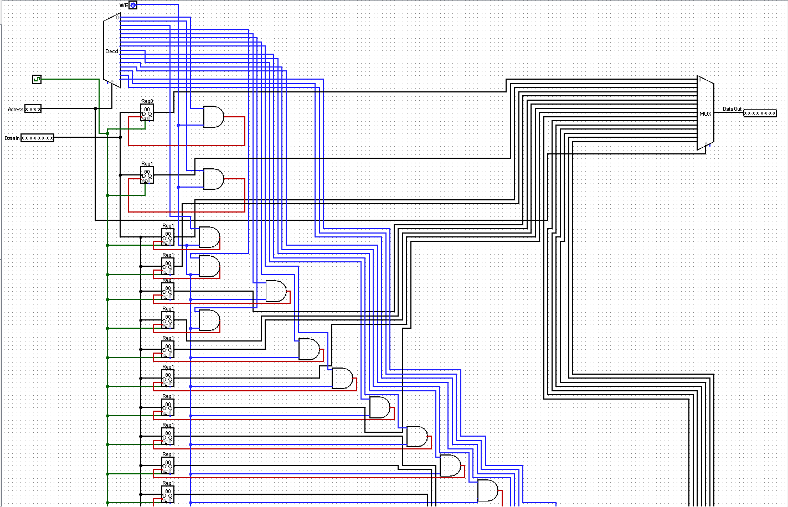

Home Server
An in-progress home server and hardware research build exploring local file hosting, network setup, and a custom RAM-style storage module concept.
In Progress / Research Build
Overview
The project is a research-first build that connects practical home-server planning with a digital logic storage concept. The goal is to document the design decisions before publishing a finished implementation.
Technical Focus
Current work focuses on server architecture, local file access, permissions, network reliability, and the logic behind a RAM-style module for addressable data storage. The schematic shown is the RAM module I plan to build physically first with wires, logic chips, and a breadboard, then eventually scale into a cleaner PCB design.
Research Notes
- Home server requirements and setup plan
- Local file hosting and access-control workflow
- RAM module schematic planned for a breadboard prototype
- Future PCB version after the wired chip build is validated
- Progress tracked in a shared Google Doc before public repo release
Progress Doc
Research and progress notes are being collected in a Google Doc while the build is still evolving. A public GitHub repository will be added once the configuration, diagrams, and implementation notes are ready.